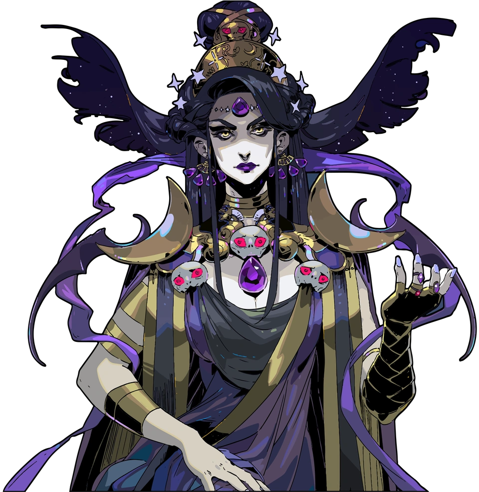

Zagreus
Prince of the Underworld.

Zagreus is the son of Hades and is the protagonist of the game Hades.
Prince of the Underworld.
Zagreus is the son of Hades and is the protagonist of the game Hades.
God of the Underworld.

Hades is the lord and master of the House of Hades, and the father of Zagreus and Melinoë.
Princess of the Underworld.
Melinoë is the daughter of Hades and is the protagonist of Hades II.
Mother Night.
Nyx is the personification of night and a resident in the House of Hades.
Goddess of the Hunt
Artemis is the older twin sister of Apollo.
Stygian Boatman
Charon is responsible for ferrying deceased souls across the river and into the underworld.
First of the Furies

Megaera is the one of the three sisters Furies.